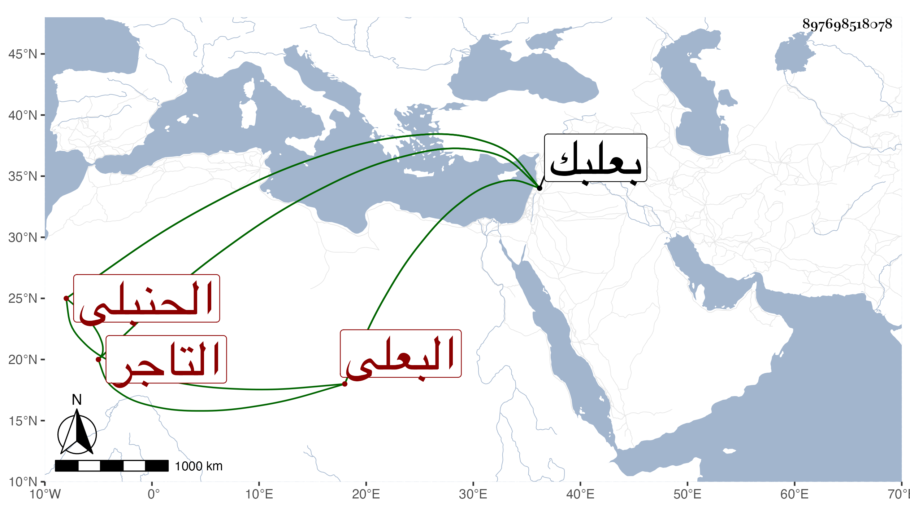

0902Sakhawi.DawLamic.ITO20230111-ara1.EIS1600.897698518078
Biography ID: 897698518078
478
حسن بن محمد بن حسين بن محمد البدر بن الشمس بن العز البعلى الحنبلى التاجر ويعرف بابن العجمى ولد ببعلبك قبل التسعين ونشأ بها فقرأ القرآن على ابن قاضى المنيظرة وفي الفقه يسيرا على العماد بن بيغوت الحنبلى وتكسب بالتجارة وكان قد سمع الصحيح على الزين عبد الرحمن بن الزعبوب وحدث لقيته ببعلبك فقرأت عليه وكان خيرا محبا في الحديث وأهله مات قريب الستين .
